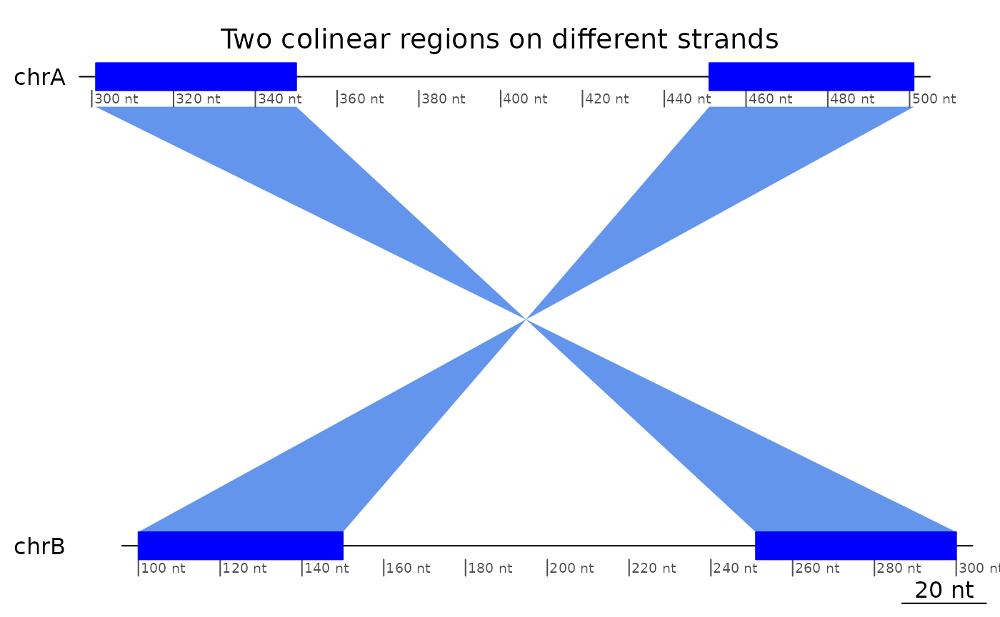
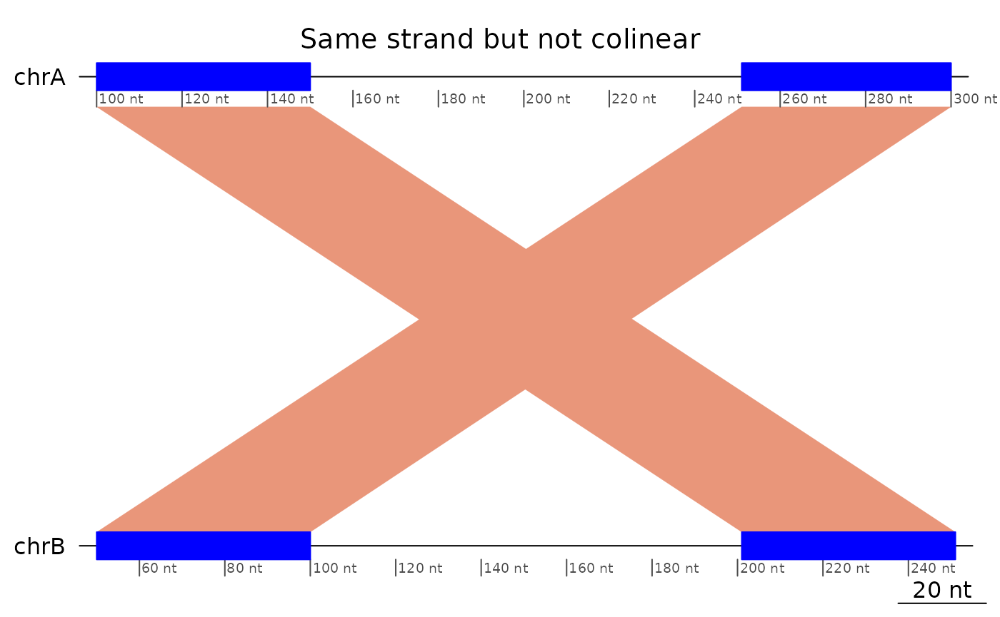
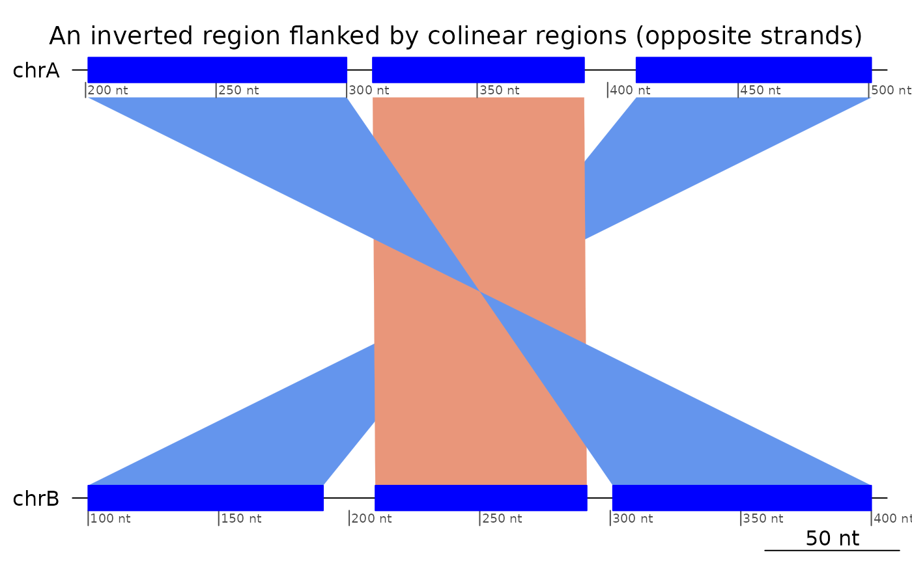
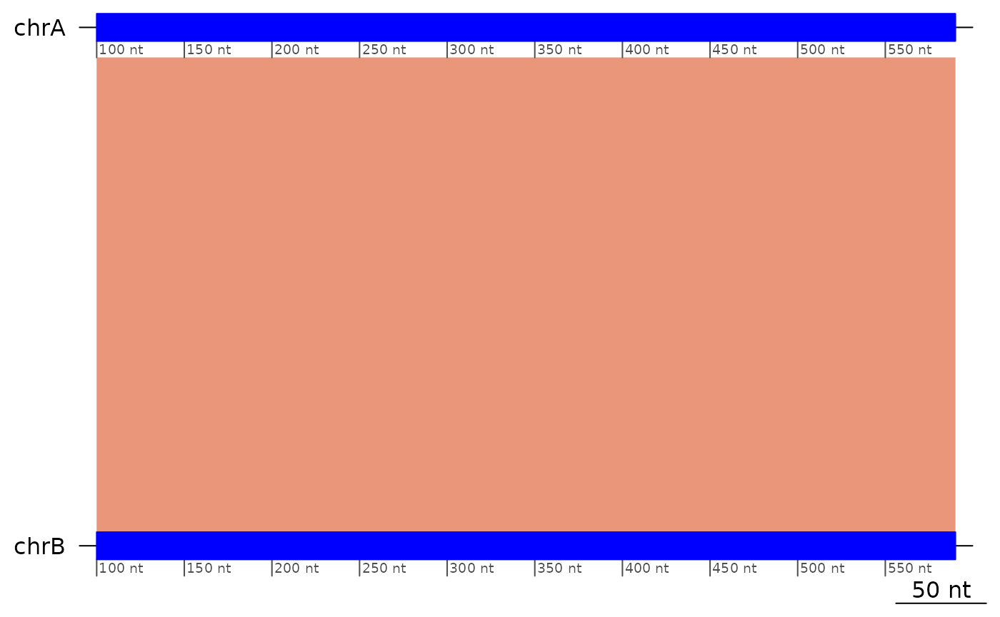
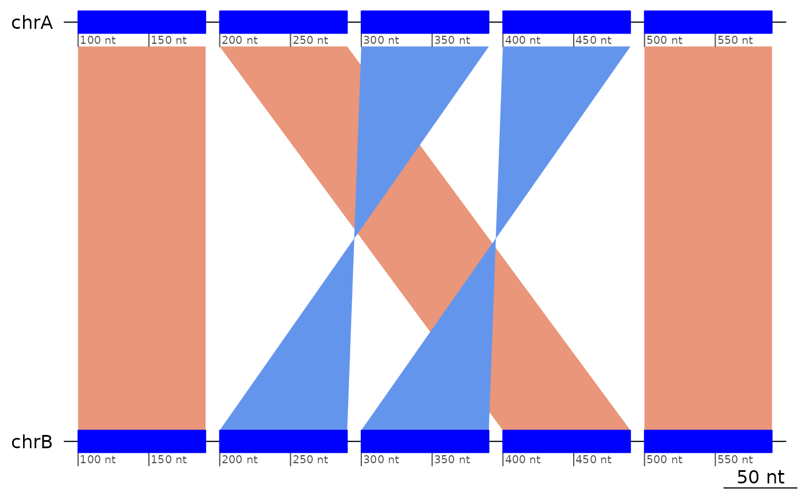
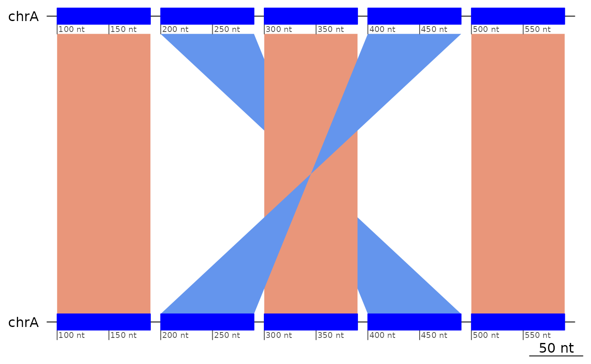
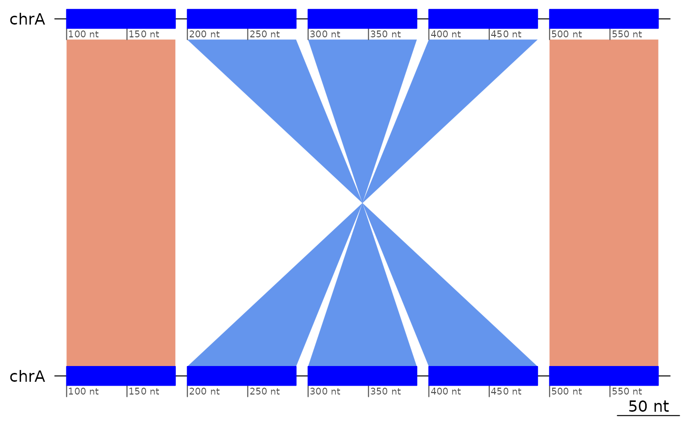

Structural Variants
Charles Plessy
22 May, 2023
Source:vignettes/StructuralVariants.Rmd
StructuralVariants.RmdStructural Variants
The GBreaks() objects here are provided as lazy
data and by convention their name always start with
example.
Colinearity
Definition
We define structural variants as patterns of interruption of the colinearity between genomes.
Colinearity is a property of pairs of mapped regions.
plotApairOfChrs(exampleColinear, main = "Two colinear regions")
Regions that mapped on reverse strands and in reverse order are also colinear.
plotApairOfChrs(reverse(exampleColinear), main = "Two colinear regions on different strands")
Regions that are only in reverse order, or only mapped on opposite strands are not colinear.
plotApairOfChrs(exampleNotColinear, main = "Same strand but not colinear")
plotApairOfChrs(reverse(exampleNotColinear), main = "Both on opposite strand but not colinear")
In this example, the syntenic chromosomes are called
chrA and chrB, but the names do not
matter.
Technical details
Remember that the flagColinearAlignments() function puts
the flag on the first member of the pair, ordered by the sequence on the
target genome.
flagColinearAlignments(exampleColinear)## GBreaks object with 2 ranges and 2 metadata columns:
## seqnames ranges strand | query colinear
## <Rle> <IRanges> <Rle> | <GRanges> <logical>
## [1] chrA 100-150 + | chrB:100-150 TRUE
## [2] chrA 251-300 + | chrB:251-300 FALSE
## -------
## seqinfo: 1 sequence from an unspecified genome
flagColinearAlignments(reverse(exampleColinear))## GBreaks object with 2 ranges and 2 metadata columns:
## seqnames ranges strand | query colinear
## <Rle> <IRanges> <Rle> | <GRanges> <logical>
## [1] chrA 1-50 - | chrB:251-300 TRUE
## [2] chrA 151-201 - | chrB:100-150 FALSE
## -------
## seqinfo: 1 sequence from an unspecified genome
# Note the tolerance window
flagColinearAlignments(exampleColinear, tol = 100)## GBreaks object with 2 ranges and 2 metadata columns:
## seqnames ranges strand | query colinear
## <Rle> <IRanges> <Rle> | <GRanges> <logical>
## [1] chrA 100-150 + | chrB:100-150 FALSE
## [2] chrA 251-300 + | chrB:251-300 FALSE
## -------
## seqinfo: 1 sequence from an unspecified genome
# Strandless mappings can also be colinear
exampleColinear |> plyranges::mutate(strand = "*") |> flagColinearAlignments()## GBreaks object with 2 ranges and 2 metadata columns:
## seqnames ranges strand | query colinear
## <Rle> <IRanges> <Rle> | <GRanges> <logical>
## [1] chrA 100-150 * | chrB:100-150 TRUE
## [2] chrA 251-300 * | chrB:251-300 FALSE
## -------
## seqinfo: 1 sequence from an unspecified genome
flagColinearAlignments(exampleNotColinear)## GBreaks object with 2 ranges and 2 metadata columns:
## seqnames ranges strand | query colinear
## <Rle> <IRanges> <Rle> | <GRanges> <logical>
## [1] chrA 100-150 + | chrB:201-251 FALSE
## [2] chrA 251-300 + | chrB:50-100 FALSE
## -------
## seqinfo: 1 sequence from an unspecified genomeTo make some sanity checks against the other flagging functions there is also an object containing three colinear mappings.
flagColinearAlignments(exampleColinear3)## GBreaks object with 3 ranges and 2 metadata columns:
## seqnames ranges strand | query colinear
## <Rle> <IRanges> <Rle> | <GRanges> <logical>
## [1] chrA 100-200 + | chrB:100-200 TRUE
## [2] chrA 201-300 + | chrB:201-300 TRUE
## [3] chrA 301-400 + | chrB:301-400 FALSE
## -------
## seqinfo: 1 sequence from an unspecified genomeInversions
Trivial inversions
Trivial inversions are triplets of mapped regions that would be colinear if the strand of the second one were reversed. Note that, like for colinear patterns, the flag is put on the first mapping of the triplet.
exampleInversion |> flagColinearAlignments() |> flagInversions()## GBreaks object with 3 ranges and 3 metadata columns:
## seqnames ranges strand | query colinear inv
## <Rle> <IRanges> <Rle> | <GRanges> <logical> <Rle>
## [1] chrA 100-190 + | chrB:100-190 FALSE TRUE
## [2] chrA 210-291 - | chrB:210-291 FALSE FALSE
## [3] chrA 301-400 + | chrB:301-400 FALSE FALSE
## -------
## seqinfo: 1 sequence from an unspecified genome
plotApairOfChrs(exampleInversion, main = "An inverted region flanked by colinear regions")
plotApairOfChrs(reverse(exampleInversion), main = "An inverted region flanked by colinear regions (opposite strands)")
# Removing the inversion restores colinearity
exampleInversion[-2] |> flagColinearAlignments()## GBreaks object with 2 ranges and 2 metadata columns:
## seqnames ranges strand | query colinear
## <Rle> <IRanges> <Rle> | <GRanges> <logical>
## [1] chrA 100-190 + | chrB:100-190 TRUE
## [2] chrA 301-400 + | chrB:301-400 FALSE
## -------
## seqinfo: 1 sequence from an unspecified genome
# Flipping the inversion restores colinearity
exampleInversion |> plyranges::mutate(strand = "+") |> flagColinearAlignments()## GBreaks object with 3 ranges and 2 metadata columns:
## seqnames ranges strand | query colinear
## <Rle> <IRanges> <Rle> | <GRanges> <logical>
## [1] chrA 100-190 + | chrB:100-190 TRUE
## [2] chrA 210-291 + | chrB:210-291 TRUE
## [3] chrA 301-400 + | chrB:301-400 FALSE
## -------
## seqinfo: 1 sequence from an unspecified genome
# Note the tolerance window
flagInversions(exampleInversion, tol = 10)## GBreaks object with 3 ranges and 2 metadata columns:
## seqnames ranges strand | query inv
## <Rle> <IRanges> <Rle> | <GRanges> <Rle>
## [1] chrA 100-190 + | chrB:100-190 FALSE
## [2] chrA 210-291 - | chrB:210-291 FALSE
## [3] chrA 301-400 + | chrB:301-400 FALSE
## -------
## seqinfo: 1 sequence from an unspecified genomeDouble inversions
Double inversions are the result of two overlapping trivial
inversions, and are detected with a different approach, implemented in
the flagDoubleInversions() function.
Here we construct a double inversion in 3 steps:
- First, we start from 5 collinear ranges,
- then we invert ranges 2 and 3,
- then we invert ranges 3 an 4 (of step 2).
show a triplet resulting from a double inversion, flanked by two regions that did not move.
exampleColinear5 |> plotApairOfChrs(main = "5 collinear ranges")
exampleInversion5uncollapsed |> plotApairOfChrs(main = "Invert ranges 2 and 3")
exampleDoubleInversion1 |> plotApairOfChrs(main = "Invert ranges 3 and 4 of the previous step")
Same story but showing coalesced alignments.
exampleColinear5 |> coalesce_contigs() |> plotApairOfChrs()
exampleInversion5uncollapsed |> coalesce_contigs() |> plotApairOfChrs()
exampleDoubleInversion1 |> coalesce_contigs() |> plotApairOfChrs()
Given the double inversion example above, but not its history, we can deduce the coordinates of the inversions (pairs of breakpoints), but not the order in which they took place.
Nested inversions
The ?flagInversions algorithm only detects the simplest
cases. In order to detect nested inversions, the inner ones have to be
removed.
exampleNestedInversions |> plotApairOfChrs()
exampleNestedInversions |> flagInversions()## GBreaks object with 5 ranges and 2 metadata columns:
## seqnames ranges strand | query inv
## <Rle> <IRanges> <Rle> | <GRanges> <Rle>
## [1] chrA 100-190 + | chrA:100-190 FALSE
## [2] chrA 200-290 - | chrA:400-490 TRUE
## [3] chrA 300-390 + | chrA:300-390 FALSE
## [4] chrA 400-490 - | chrA:200-290 FALSE
## [5] chrA 500-590 + | chrA:500-590 FALSE
## -------
## seqinfo: 1 sequence from an unspecified genome
(flipped <- (exampleNestedInversions |> flagInversions() |> flipInversions()))## GBreaks object with 5 ranges and 1 metadata column:
## seqnames ranges strand | query
## <Rle> <IRanges> <Rle> | <GRanges>
## [1] chrA 100-190 + | chrA:100-190
## [2] chrA 200-290 - | chrA:400-490
## [3] chrA 300-390 - | chrA:300-390
## [4] chrA 400-490 - | chrA:200-290
## [5] chrA 500-590 + | chrA:500-590
## -------
## seqinfo: 1 sequence from an unspecified genome
flipped |> plotApairOfChrs()
flipped |> coalesce_contigs() |> flagInversions()## GBreaks object with 3 ranges and 3 metadata columns:
## seqnames ranges strand | query score inv
## <Rle> <IRanges> <Rle> | <GRanges> <integer> <Rle>
## [1] chrA 100-190 + | chrA:100-190 91 TRUE
## [2] chrA 200-490 - | chrA:200-490 291 FALSE
## [3] chrA 500-590 + | chrA:500-590 91 FALSE
## -------
## seqinfo: 1 sequence from an unspecified genomeTransolocations
If a region has moved, but is not an inversion, then it is a translocation.
exampleTranslocation |> flagColinearAlignments() |> flagInversions()## GBreaks object with 3 ranges and 3 metadata columns:
## seqnames ranges strand | query colinear inv
## <Rle> <IRanges> <Rle> | <GRanges> <logical> <Rle>
## [1] chrA 100-200 + | chrB:100-200 FALSE FALSE
## [2] chrA 201-300 + | chrC:201-300 FALSE FALSE
## [3] chrA 301-400 + | chrB:301-400 FALSE FALSE
## -------
## seqinfo: 1 sequence from an unspecified genome
plotApairOfChrs(exampleTranslocation)It does not matter if the region moved on the minus strand
exampleTranslocation2 |> flagColinearAlignments() |> flagInversions()## GBreaks object with 3 ranges and 3 metadata columns:
## seqnames ranges strand | query colinear inv
## <Rle> <IRanges> <Rle> | <GRanges> <logical> <Rle>
## [1] chrA 100-200 + | chrB:100-200 FALSE FALSE
## [2] chrA 201-300 - | chrC:201-300 FALSE FALSE
## [3] chrA 301-400 + | chrB:301-400 FALSE FALSE
## -------
## seqinfo: 1 sequence from an unspecified genome
plotApairOfChrs(exampleTranslocation2)
Insertions / Deletions (indels)
NOTE that searching for insertion/deletions make little sense in one-to-one alignment unless the maximal distance for colinearity is set to a meaningful value.
exampleDeletion## GBreaks object with 3 ranges and 1 metadata column:
## seqnames ranges strand | query
## <Rle> <IRanges> <Rle> | <GRanges>
## [1] chrA 100-200 + | chrB:100-200
## [2] chrA 201-300 + | chrC:401-500
## [3] chrA 301-400 + | chrB:201-300
## -------
## seqinfo: 1 sequence from an unspecified genome
plotApairOfChrs(exampleDeletion)
exampleInsertion## GBreaks object with 3 ranges and 1 metadata column:
## seqnames ranges strand | query
## <Rle> <IRanges> <Rle> | <GRanges>
## [1] chrA 100-200 + | chrB:100-200
## [2] chrA 201-300 + | chrB:301-400
## [3] chrC 401-500 + | chrB:201-300
## -------
## seqinfo: 2 sequences from an unspecified genome
plotApairOfChrs(exampleInsertion)